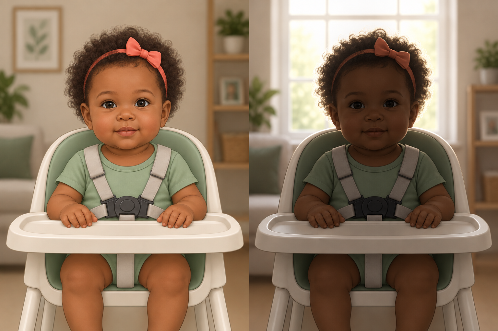
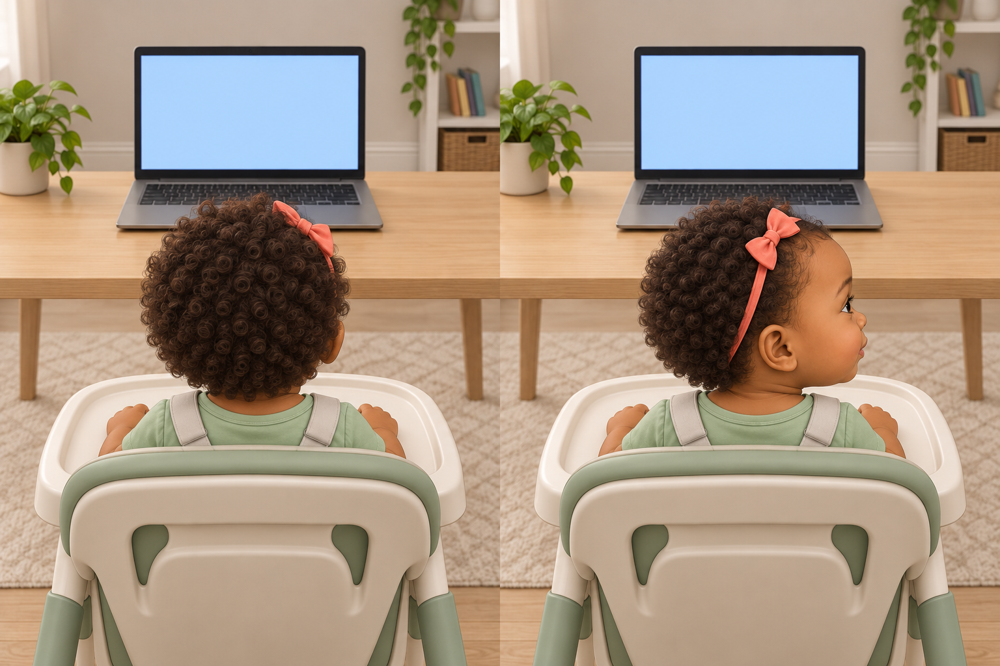

A simple setup
A computer, a quiet spot,
and a little space to sit.
Review only—not for participating families. No camera, recording or responses are collected. Skips do not mark practice as completed.
Setup and practice. Then baby’s turn.
Instructions play aloud
Getting the preview ready…
Thank you for joining us with your baby.
We’ll help you get comfortable, one step at a time.
A computer, a quiet spot,
and a little space to sit.
Your baby will see short movies.
There are no answers to give.
You’ll watch your baby and
help us know when to move on.
Getting the preview ready…
Setup · 1 of 4
You’ll need a webcam, speakers, and a physical keyboard.

Both eyes clear
Too dark to see the eyes
Play the sound, then tell us if you heard it.
Check that your computer and this browser tab aren’t muted. Turn up your speakers a little, then play the chimes again. If sound still won’t play, try reloading or using another computer.
Example 1 of 4 · See it
Start counting only when the picture is still.
A look back resets the count.
Watch your baby—not the movies.
Animated practice example—not your baby or a live camera.
Some movies move on by themselves. Need a break? Press P; continuing restarts that movie from the beginning.
Your turn
Wait for a still picture, then 3 full seconds away.
A look back resets your count.
Watch this practice baby. You do the counting.

Use the space bar on your keyboard.
AI-generated illustration, not a real baby or camera view. This checks your timing in this example only.
Watch how it works
Start counting only when the picture is still.
A look back resets the count. Start fresh the next time your baby looks away.
This example teaches the look-away rule. During the study, wait for the action to finish before using it.
Try it before your baby joins
Watch the child in this practice video.
Press space after they look away for 3 seconds in a row.
This practice is for you, not your baby. Brief looks back reset your count.
On your lap or in a high chair, facing the screen.
Both eyes visible. No bright window behind.
Baby’s face lowest in view. Keyboard in your reach.
No pointing, naming or encouraging them to look.
Just watching—no answers needed. Breaks are always okay.
Preview only · Camera and recording are off. CHS consent and a live camera check will come before the study.
These controls are not for families. No camera, recording, upload, gaze detection, random assignment, or saved responses are active here.
Loading the selected study map…
The chime sound check is an existing review candidate, not approved release audio. Raz training plays directly from its author-hosted OSF sources and requires an internet connection. This design is not yet installed on CHS.
Your baby’s turn
During the still picture, look-backs reset your 3-second count. The key does not measure the baby’s gaze.
Jumping to an item is for review only. These controls are outside the parent experience.
This rehearsal opens parent control on the video’s ended event. The current CHS draft uses a duration timer. The 60-second threshold starts at action onset and requires completed playback; buffering can extend this. This page does not validate CHS recording, randomization, uploads, or stalled playback.
Preview complete
You’ve reached the end of the local movie sequence. No camera recording or study response was created.